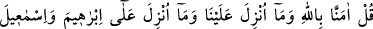
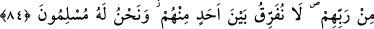
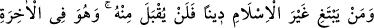
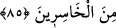

ANCAK İSLÂM
84. De ki: biz Allah’a, bize indirilene, İbrâhîm, İsmâîl, İshâk, Yâkub ve Yâkub
oğullarına indirilenlere, Mûsâ, Îsâ ve (diğer) peygamberlere Rableri tarafından
verilenlere îman ettik. Onları birbirinden ayırdetmeyiz. Biz ancak O’na teslim
oluruz.
85. Kim, İslâm’dan başka bir din ararsa, bilsin ki kendisinden (böyle bir din) aslâ
kabul edilmeyecek ve o, âhirette ziyan edenlerden olacaktır.
“De ki: Allah’a îman ettik.” Bu ifade, Hz. Peygamber’e aşağıda zikredilecek şeylere
îman ettiğini açıklamasına dâir bir emirdir. “Îmân ettik” lâfzındaki çoğul zamiri, Hz.
Peygamber (s.a.)’in, ne kadar yüce bir mevkide bulunduğunu; ne kadar değerli olduğunu
bildirmek içindir. “Bize indirilene” ki bu Kur’ân’dır. “İbrâhîm’e, İsmâîl’e, İshâk’a,
Yâkub’a ve esbâta indirilene” sahifelere.
“Esbât” kelimesi, torun mânasına gelen “sıbt”ın çoğuludur. Bu torunlardan maksat,
Yâkub (a.s.)’ın torunları on iki oğlu ve bunların zürriyetleridir. Bunların tamamı, Hz.
İbrâhîm (a.s)’ın torunlarıdır. “Mûsâ’ya ve Îsâ’ya” verilen Tevrat ve İncil ve
gösterdikleri diğer mûcizelere. Burada Hz. Mûsâ ile Hz. Îsâ’nın özel olarak
zikredilmesinin sebebi, yahûdî ve hıristiyanlarla konuşulmasıdır. Gerek adı geçen,
gerekse adı geçmeyen “bütün peygamberlere Rableri tarafından verilene” kitap ve
mûcizelere “inandık.” yahûdî ve hıristiyanların âdeti olduğu üzere, bazısına inandık;
bazısına inanmadık diyerek “Onlar arasında bir ayrım yapmayız.” Bilakis, herbirinin
doğruluğuna kendi zamanlarında kendilerine vahyedilenlerin hak olduğuna inanırız.
İmam Râzî, tefsîrinde şöyle diyor: “Alimler, şerîatları neshedilen önceki
peygamberlere nasıl îman edileceği hakkında farklı görüşlere sahiptirler. Bu farklılığın
temelinde yatan sebep ise peygamberin şerîatı mensûh olunca peygamberliğinin de
mensûh olup olmayacağı meselesidir. Böyle bir peygamberin, peygamberliğinin de
mensûh olacağını söyleyenler; “Biz, bunların bir zamanlar nebî veya rasûl olduklarına
inanıyoruz, ama şu anda nebî veya rasûl olduklarına inanmayız” derler. Bir peygamberin
şerîatinin neshedilmesinin peygamberliğinin de neshedilmesini gerektirmeyeceğini